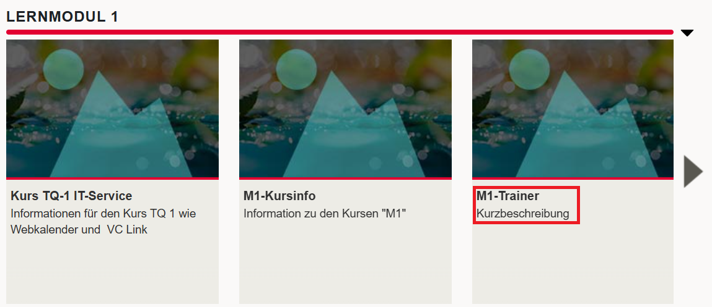
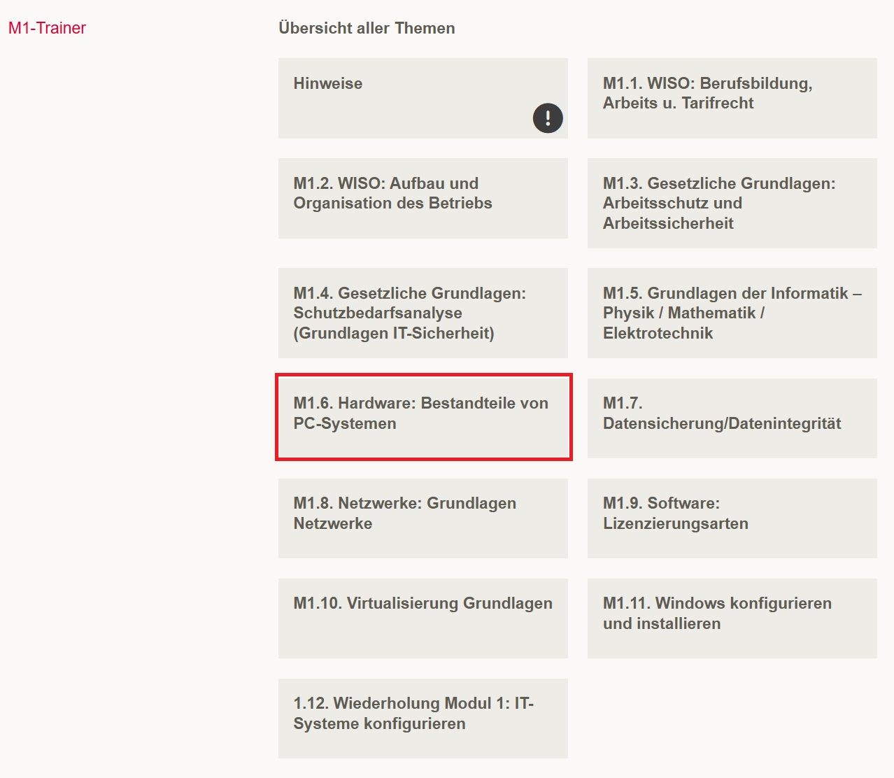
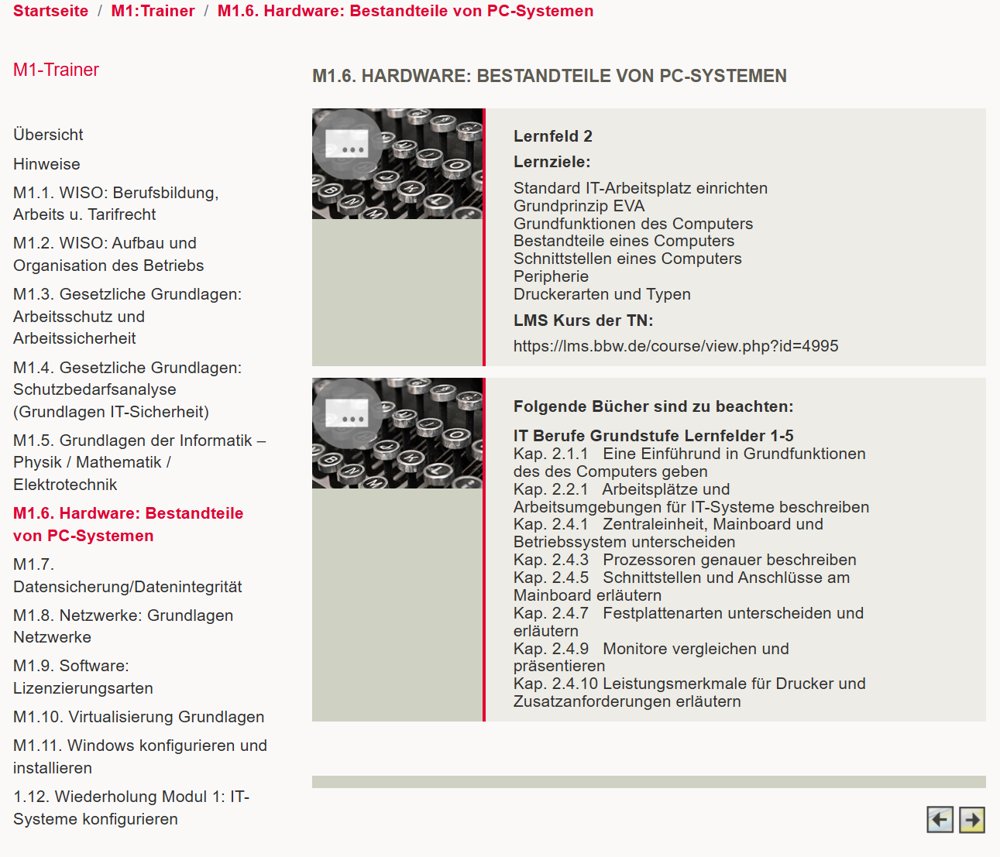
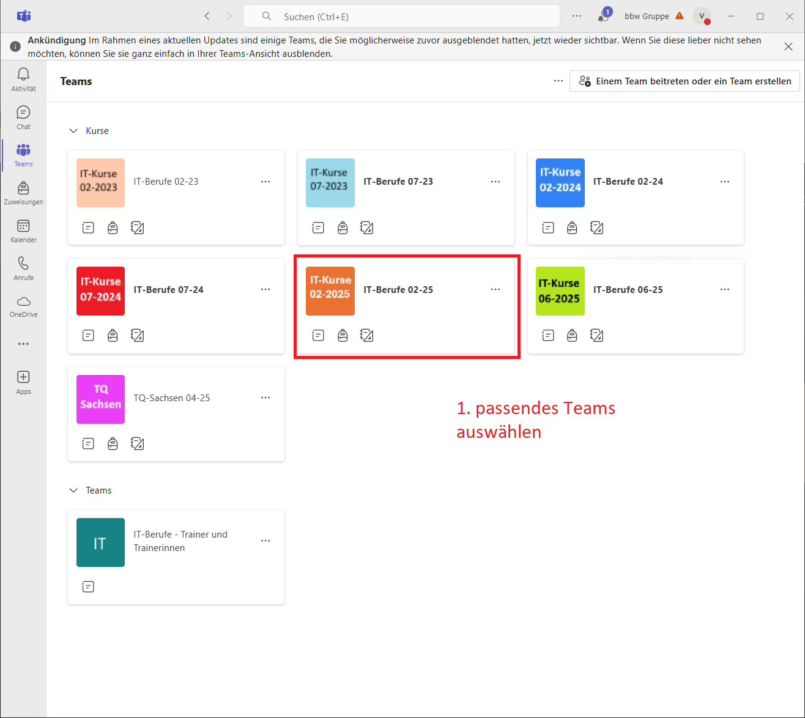
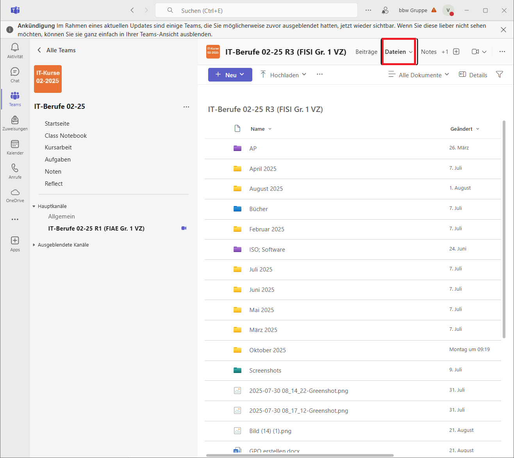
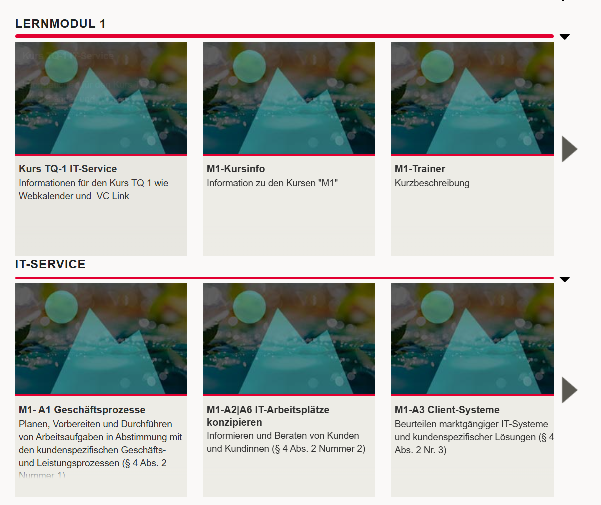

Unterlagen¶
Was muss unterrichtet werden?¶
Was muss unterrichtet werden?
Die jeweiligen Inhalte, die im Modul unterrichtet werden sollen, findet man im LMS (Lernmanagmentsystem). Klappe zuerst den Reiter "IT-Berufe" aus und wähle dann das passende Lernmodul. Klicke dann auf die Kachel "MX-Trainer", wobei "X" die jeweilige Nummer des Moduls ist.

Hist ist eine Übersicht auf aller Themen des Moduls. Klicke auf eine von diesen, um mehr Informationen zu erhalten.

Hier befinden sich die erwarteten Inhalte des Unterricht. Teilwese finden sich hier auch Literaturverweise.

Kurs finden im LMS
Hier findest du eine Auflistung aller Kurse:
| Nummer | Titel |
|---|---|
| M1-1 | WISO: Berufsbildung, Arbeits u. Tarifrecht |
| M1-2 | WISO: Aufbau und Organisation des Betriebs |
| M1-3 | Gesetzliche Grundlagen: Arbeitsschutz und Arbeitssicherheit |
| M1-4 | Gesetzliche Grundlagen: Schutzbedarfsanalyse (Grundlagen IT-Sicherheit) |
| M1-5 | Grundlagen der Informatik – Physik / Mathematik / Elektrotechnik |
| M1-6 | Hardware: Bestandteile von PC-Systemen |
| M1-7 | Datensicherung/Datenintegrität |
| M1-8 | Netzwerke: Grundlagen Netzwerke |
| M1-9 | Software: Lizenzierungsarten |
| M1-10 | Virtualisierung Grundlagen |
| M1-11 | Windows konfigurieren und installieren |
| M1-12 | Wiederholung Modul 1: IT-Systeme konfigurieren |
| M2-1 | Allgemein |
| M2-2 | IT-Sicherheit: Schutzbedarfsanalyse |
| M2-3 | IT-Arbeitsplätze einrichten (kaufm. / techn. Projektmanagement klassisch) |
| M2-4 | Netzwerke konfigurieren (Topologien, Cu/GF, Layer-3-Geräte, VLAN), Visio |
| M2-5 | Netzwerke konfigurieren (DNS, DHCP, Protokolle), Funknetze |
| M2-6 | Windows Serverbetriebssysteme konfigurieren / Virtualisierung (Hyper-V) |
| M2-7 | Fehleranalyse, Fehlerbeseitigung |
| M2-8 | Projektwoche Microcontrollersysteme (Arduino) |
| M2-9 | Linux-Systeme (Ubuntu) |
| M2-10 | Theor. Grundlagen der Programmierung / Programmiersprachen auswählen |
| M2-11 | Wiederholung TP2/KFS2 Vorbereitung |
| M3-1 | Allgemein |
| M3-2 | Programmiersprache auswählen und unterscheiden / Grundlagen der Programmierung |
| M3-3 | Einführung C# |
| M3-4 | Programmierung (Dateisystemarbeit, Automatisierung, administrative Aufgaben) |
| M3-5 | IT-Sicherheit (Benutzerkonten, Richtlinien, AD), FW auf BS- und NW-Ebene, Computerschädlinge |
| M3-6 | Container-Betriebssysteme |
| M3-7 | WiSo: Beschaffung und Vertrieb, Leistungsabschluss |
| M3-8 | WiSo: Systemübergabe, Mitarbeiterschulungen |
| M3-9 | Datenbanksysteme differenziert anwenden und absichern |
| M3-10 | Datenbanken SQL |
| M3-11 | Webserver und Webseiten (HTML, PHP, SQL) |
| M3-12 | Intensivierung Linux (OSI-Layer 5-7) |
| M3-13 | Wiederholung/Gesamtüberblick zur Prüfung 3 |
| M4-1 | Allgemein |
| M4-2 | Daten aufbereiten (Excel-Makros und Python), Pivotabellen |
| M4-3 | Versionierung von Softwareprodukten |
| M4-4 | Algorithmen erstellen - Programmierung (OOP) |
| M4-5 | Systemüberwachung und Ressourcenverwaltung |
| M4-6 | Domänennetzwerke (Fileserver, Berechtigungen) Powershell Intensivierung |
| M4-7 | Speicherlösungen / Cloudsysteme - CPS |
| M4-8 | Cyber Physische Systeme planen und entwickeln |
| M4-9 | Softwarediagramme erweitert |
| M4-10 | Projektdokumentation (TQ Thema) |
| M4-11 | Wiederholung und Prüfungsvorbereitung |
| M5-1 | Agiles Projektmanagement (Scrum oder Prince2) |
| M5-2 | Projektdokumentation |
| M5-3a | FIAE: Administration-Webserver |
| M5-3b | FISI: Administration-Linux-Systeme |
| M5-4a | FIAE: Content-Management-Systeme, CSS, UX |
| M5-4b | FISI: IOT-Systeme, Industrie 4.0 |
| M5-5 | Domänennetzwerke |
| M5-6a | FIAE: Programmierung: Testkonzepte, Transferformate |
| M5-6b | FISI: IT-Sicherheitssysteme implementieren |
| M5-7 | Künstliche Intelligenz |
| M5-8 | WiSo: Kaufmännische Steuerung und Kontrolle |
| M5-9 | IT-Sicherheit: Datenübernahmen planen und durchführen |
| M5-10a | FIAE: Benutzerschnittstellen (Weblösungen erstellen) optional |
| M5-10b | FISI: Kundenspezifische Systemintegration |
| M5-11 | Wiederholung und Prüfungsvorbereitung |
| M6-1 | Allgemein |
| M6-2 | Produktübergabe und Kundenschulung |
| M6-3 | Rhetorik und Präsentationstechnik (PV für Projektarbeit) |
| M6-4 | Prüfungsvorbereitung der AP 2 (FIAE) |
| M6-5 | Prüfungsvorbereitung der AP 2 (FISI) |
| M6-6 | Optional: Kundenspezifische Anwendungsentwicklung (FIAE) |
| M6-7 | Optional: Kundenspezifische Systemintegration (FISI) |
Unterlagen anderer Klassen¶
Video
1) Wähle zunächst eines der Teams aus.

2) Wähle eine Kanal aus (achte dabei auf ausgeblendete Kanäle). Jeder Kanal ist eine eigene Klasse mit eigenen Unterlagen
3) Wähle Dateien aus. Jede Klasse ist selbst für die Organisation ihrer Unterlagen verantwortlich.

Bücher¶
Wir dürfen euch die Bücker nicht direkt zur Verfügung stellen, doch man findet diese im Teams.
Die Inhalte aus dem Westermann sollten als Prüfungsrelevant angesehen werden, wenn diese im LMS genannt werden.

Simple Club¶
Video
Auf dieser Webseite kann man unter dem Link "Simple Club allgemein" Lerninhalte finden.
Unterlagen im LMS¶
Teilweise können im LMS auch Inhalte zu den Fächern gefunden werden. Gehe dazu ins Lernmodul und klappe den inneren Reiter aus.

Unterlagen von Qualidy¶
Qualidy entwickelt derzeit auch Unterlagen. Dies ist noch in Arbeit.
IT-Berufe Podcast¶
Der IT-Berufe Podcast von Stefan Macke bietet praxisnahe Tipps, Materialien und Erfahrungsberichte zur Ausbildung in IT-Berufen – ideal als ergänzende Ressource für Ausbilder und Trainer.